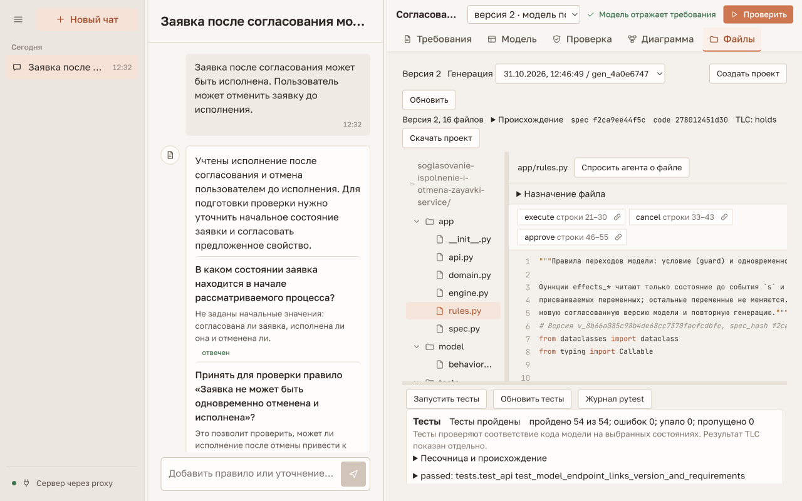

Ручная демонстрация Проверялки
Стенд
Открыть приложение · Сохранённое нарушение · Исправленная версия
Один сервер: веб-интерфейс, API, TLC, генератор и Docker-тесты. GPT работает через подписку. В базе — копия настоящего успешного прогона; новый диалог начинается кнопкой «Новый чат».
Live-сценарий · около 7–10 минут
Создать новый чат. Отправить начальное описание. Ответы GPT могут отличаться; отвечать по смыслу фактического вопроса и проверять, какие правила попали в модель.
1. Начальное описание
Заявка после согласования может быть исполнена. Пользователь может отменить заявку до исполнения.
2. Начальное состояние и правила
Новая заявка не согласована, не исполнена и не отменена. Согласование ставит approved=true. Отмена ставит cancelled=true и не меняет approved. Исполнение разрешено, если approved=true, и ставит executed=true. Нужно проверить, что отменённая заявка не может быть исполнена.
3. Критерий проверки
Да, верно: Заявка не может быть одновременно отменена и исполнена.
4. Условия согласования
Согласовать можно заявку, которая ещё не согласована, не отменена и не исполнена.
5. Просмотреть и проверить модель
Открыть требования и модель. Убедиться: отмена оставляет approved=true, а исполнение проверяет только approved. Нажать «Проверить». Ожидаемый контрпример: согласовать → отменить → исполнить. На шаге отмены согласование остаётся; поэтому guard исполнения пропускает заявку.
Показать значения флагов, исходные требования и объяснение. На диаграмме выбрать переменную в «Этапы», развернуть граф, пройти шаги трассы. Диаграмма показывает выбранную проекцию, полное состояние видно в инспекторе.
6. Уточнить правило
Исправляю правило исполнения: исполнение разрешено, только если approved=true и cancelled=false. Остальные правила и критерий проверки оставляем.
Появляется новая версия; старая модель и её нарушение сохраняются. Снова нажать «Проверить». Ожидается подтверждение правила; это результат проверки конечной модели.
Генерация и вопрос о файле
- Нажать «Согласовать для кода»: это согласие с интерпретацией требований, отдельно от результата TLC.
- Открыть «Файлы», сгенерировать проект без разрешения непроверенной модели.
- Открыть
app/rules.py, нажать обсуждение файла и отправить вопрос ниже. - Скачать ZIP. Запустить тесты в песочнице; открыть результат. Обновить страницу: история, версия и ответ о файле сохраняются.
Объясни, как условие guard_execute предотвращает найденный контрпример. Ничего не меняй.
В выполненном эталоне: 16 файлов, ZIP 20392 байта, Docker 54/54 PASS. В новом диалоге число файлов/тестов зависит от полученной модели.
Сохранённый прогон
Если GPT долго отвечает или подписка ограничена, открыть проверку версии 1, затем проверку версии 2. Это сохранённые результаты настоящих GPT, TLC и Docker. Для просмотра не нужно заново отправлять сообщения или запускать проверки.
Для замены ширины панелей потянуть разделитель мышью; с клавиатуры — фокус на разделителе и стрелки. «Развернуть диаграмму» открывает граф целиком; Escape возвращает в рабочую область.

Что включено и что ещё проверить
UI-правки реализованы: компактная шапка, умеренные скругления, регулируемая ширина, отдельное разворачивание графа, контролы трассы без наложения и действия обсуждения через чат. Пользовательская визуальная приёмка остаётся отдельным шагом.
TXT/MD/DOCX доступны в интерфейсе. Изображения, снимки репозиториев и MCP подключены к общему API; клиентских экранов изображений/репозиториев пока нет. Разбор изображения не создаёт автоматически BehavioralModel. MCP сравнивает только точную сохранённую генерацию.
Общая интеграция: backend 522 PASS с обязательными TLC/Docker; frontend 50 PASS, extensions 113 PASS. Полный live browser+GPT-прогон сделан ранее для основного сценария; при сборке этого стенда новых вызовов провайдера не было. Корпусное качество аналитика (#30), чистая установка на новой машине и GitHub review проверяются отдельно.